5. LLMs and VLMs#
5.1. Transformer Architectures#
The power of Large Language Models (LLMs) such as GPTs, LLaMa is the Transformer (see the beginning of this subject). Roughly speaking, we have three uses of such architecture (see Fig. 5.1).
5.1.1. Encoder-Decoder#
In sequence-to-sequence (e.g Google Translate), there is an encoder that understands the input sequence and a decoder which generates the output. Herein, the pair (understanding,generating) means:
Understanding is in the encoder part:
Building the initial vectorial semantics* of the words (Embeddings)
Discover/establish relationships between different words via the relationships between these semantics (bidirectional all-and-all Attention).
Enrich the initial vectorial semantics by applying the relationships and projecting (MLP/FFN).
Generating is in the decoder part:
Enriched representations of the input sequence are fed to the encoder where they help to generate the representations of the target sequence.
Generation relies on attending the relevant parts of the input’s representations (masked Attention).
Finally, the encoder applies MLP/FFN to project the (proposed) target sequence.
The loss function modifies/refines the proposal.
{kind=link}
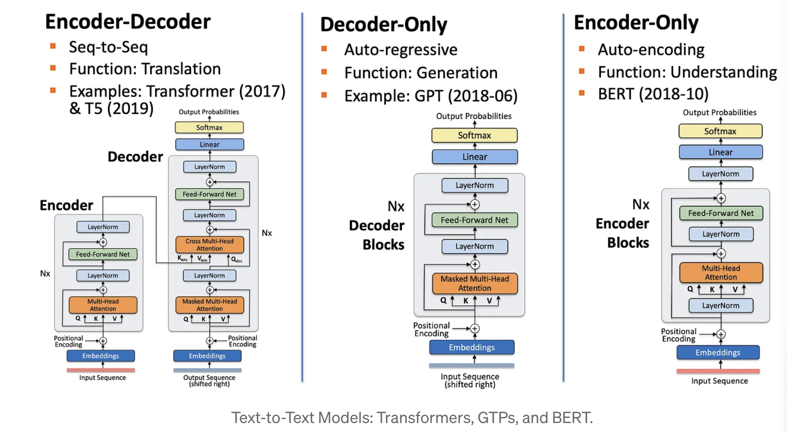
Fig. 5.1 Text-to-Text Models and Transformer Architectures. Source: Medium.#
Finally there is a cross Attention between representations of the encoder and the decoder.
5.1.2. Decoder-only#
This is the most frequent use of LLMs: purely generative. At a first sight, dec-only can be seen as an unnecessary oversimplification of the original enc-dec architecture, but this is not the case:
The encoding part introduces an inductive bias that may be not so convenient in certain simpler tasks. The so called bottleneck effect is derived from stacking many layers. Basically, this sets a semantic gap between the top layers of the encoder and the bottom layers of the decoder (this is why the cross Attention is useful).
Dec-only is sufficient, simple and scalable. This motivates the popularity of Chatbots like the GPT series (1-to-4). In addition it can be used for translation purposes due to its auto-regressive nature.
Auto-regressive (AR) models focus on regenerating text.
This is done by addressign the AR-objective:
where \(\mathbf{y}(.)\) represents the function of a token \(\mathbf{x}_t\) given the previous text sequence \(\mathbf{x}_1,\ldots,\mathbf{x}_{t-1}\).
5.1.3. Encoder-only#
Is similar to dec-only but with full bidirectional attention (BERT). What is important here is that the encoder ends-up building an embedding for the input. Such embedding can feed a task-specific layer (e.g classification returning membership probabilities). As a result, enc-only are not generative at all.
5.2. How do Transformers work?#
The token’s journey. Let us focus on the encoder-only architecture. AR models are a good example of Causal Language Modeling (CLM) where we seek a model that learns to predict the next token based only on the preceeding context.
5.2.1. Tokenization#
Given an input sentence such as
the basic idea of tokenization is to convert the string of text into a list of tokens, where each token represents a set of characters from the text in a numeric format:
The conversion typically happens either at a word level or a sub-word level instead of at a character level, since it is more efficient to assign a numerical semantic to the tokens (i.e. their meaning is in the numerical real). For instance, if we use the HugginFace model \(\text{BreadAi/gpt-Youtube}\) we get the following words:
L=['Tell', ' me', ' what', ' is', ' the', ' most', ' popular', ' song', ' in', ' YouTube']
with the following IDs in the vocabulary:
Input IDs: [17570, 479, 752, 310, 253, 954, 4633, 4498, 275, 15167]
The numerical semantic or embedding is necessary because any of the words/IDs will be associated a real-valued vector (in this case of dimension \(768\)). In Fig. 5.2 (top) we show some of the dimensions of the tokens.
{kind=link}
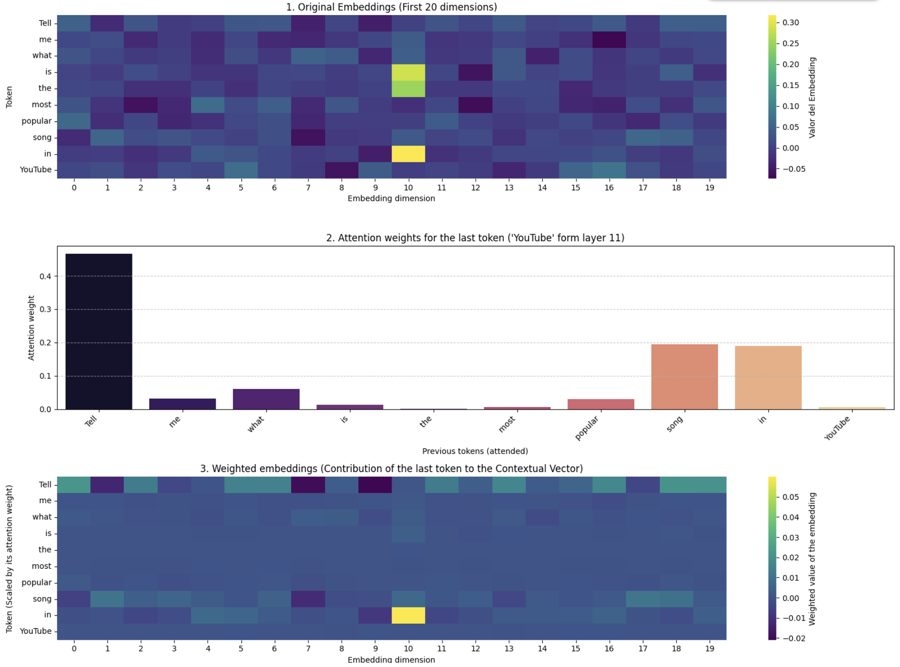
Fig. 5.2 The three stages of the token’s journey. Source: example generated by Gemini.#
After tokenization and embedding we have:
where
and \(E(\text{L}_{\omega})\) is the \(768-\)dimensional embedding for the \(\omega-\)th token.
Attention weights. Since the Transformer is an AR model, it computes real-valued coefficients \(S_{\omega',\omega}\)(attention weights) quantifying how much important are the embeddings of [\(\textbf{Tell}\), \(\textbf{me}\), \(\textbf{what}\),…,\(\textbf{YouTube}\)] to explain the last one \(\textbf{YouTube}\) (see Fig. 5.2 (middle)):
Aggretation. Finally, the model returns the weighted sum (where the weights are the attention weights) of the initial embeddings. As a result, we obtain the contextual vector for the last token of the sequence. This vector encapsulates al the relevant knowledge of the context (see Fig. 5.2 (bottom)).
Projection and logits. This contextual vector is projected on the subsequent MLP/FFN to calculate the logits and predict the next token. Such a prediction is heavily based on the contextual vector.
5.2.2. Towards active semantics#
Note that the token’s journey is the story of how the semantics of other tokens (including itself) modify its initial semantics.
An operational understanding of this modification regards the simplicity the vectorial coding (embedding) and the operational algebra (matricial multiplication).
However, an in-depth understanding concerns understanding the structure of the embedding space or latent space.
We exemplify this in Fig. 5.3, where we show several vectors associated to a given semantic field such as ‘music’. Consider for instance the vector for \(\textbf{song}\). In the figure we show the first \(5\) dimensions for the embeddings of related concepts such as \(\textbf{song}\), \(\textbf{singing}\) and \(\textbf{album}\).
Cosine similarity. The most dissimilar token in \(\text{BreadAi/gpt-Youtube}\) is \(\textbf{dislocation}\). How do we measure such a ‘difference? We simply use the cosine (dis)similarity:
which is the cosine of the angle between \(\mathbf{a}=E(\textbf{song})\) and \(\mathbf{b}=E(\textbf{X})\). In \(\text{BreadAi/gpt-Youtube}\), the maximum dissimilarity is given by \(\textbf{X}=\textbf{dislocation}\) and it is \(-0.1503\).
Note that the embedding of the same token can be different for different models. In the case of \(\text{BreadAi/gpt-Youtube}\), the model is trained with coments on YouTube videos and this highly influences the semantics of each token. In this context, \(\textbf{dislocation}\) is almost opposite to \(\textbf{song}\).
{kind=link}
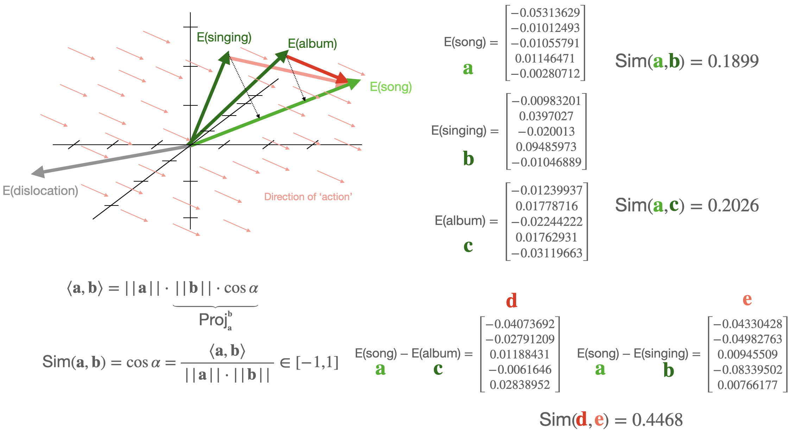
Fig. 5.3 Direction and semantics. Source: Author.#
Projection. Remember that the dot product \(\langle\mathbf{a},\mathbf{b}\rangle\) is correlated (positively or negatively) with the orthogonal projection (shadow) of \(\mathbf{b}\) on \(\mathbf{a}\). Herein, we have that \(\textbf{song}\) is more similar to \(\textbf{album}\) than to \(\textbf{singing}\) (larger projection of \(E(\textbf{album})\) than \(E(\textbf{singing})\) on \(E(\textbf{song})\).
Embedding algebra. It is well known that, in general
This suggests that the direction of the vector \(E(\textbf{man})-E(\textbf{woman})\) encodes roughly the concept of ‘gender’. Therefore, each of the \(768\) dimensions of an embedding in \(\text{BreadAi/gpt-Youtube}\) encodes a concept. In Fig. 5.3 we find that
since there is a significant (and positive) correlation between both differences (vectors in red in the figure). It seems that these differential directions encode, in this case, a notion of ‘action’ or ‘sub-product’. We are really playing the analogy game.
How many dimensions?. Using only \(768\) dimensions means encoding the same number of concepts such as ‘gender’ or ‘action’. Two concepts are ‘extrictly different’ in so far their dot product is zero (they are orthogonal). If so, only \(N=768\) ‘different concepts can be coded.
However, if we relax the orthogonality condition a bit, two concepts \(\mathbf{a}\) and \(\mathbf{b}\) may be considered ‘almost different’ if \(\langle\mathbf{a},\mathbf{b}\rangle\approx 0\). In this latter case, there are \(\exp(\epsilon N)\) concepts, where \(\epsilon\) is the margin of error, can be coded.
5.2.3. Qweries and Keys#
Back to the example input sentence, there is evidently a verb (\(\textbf{Tell}\)) that can potentially modify the meaning of the Indirect Object \(\textbf{me}\) and the Direct Object \(\textbf{what}\). Both \(\textbf{me}\) and \(\textbf{what}\) are not semantically close to a verb in the model. Actually, they are almost orthogonal to \(\textbf{Tell}\): \(\textbf{Sim}(E(\textbf{me}),E(\textbf{Tell}))=0.0153\) and \(\textbf{Sim}(E(\textbf{what}),E(\textbf{Tell}))=0.0668\) (see Fig. 5.4).
{kind=link}
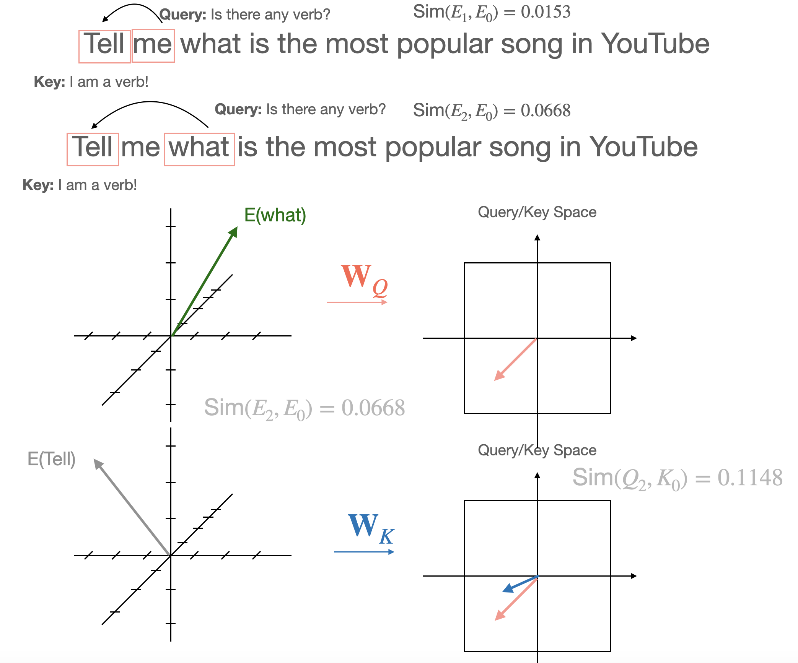
Fig. 5.4 The role of the Query and Key Matrices. Source: Author.#
So, how does the model realizes that \(\textbf{Tell}\) is a good candidate to modify the embeddings of \(\textbf{me}\) and \(\textbf{what}\)? To that end, the model stores two matrices:
Query Matrix: \(\mathbf{W}_Q\) has size \(768\times 768\) in this model. This matrix can be seen as the question that any token in the sequence makes to the others in order to understand its context inside the sentence.
a) When we compute \(\mathbf{W}_Q\cdot E_2=Q_2\), we are projecting \(E(\textbf{what})\) onto the Verbs space and similarly with \(\mathbf{W}_Q\cdot E_1=Q_1\) and \(E(\textbf{me})\).
b) In other words, we are asking how consistent is the semantics of \(\textbf{what}\) and \(\textbf{me}\) with those of a verb (in this case \(\textbf{Tell}\)). This means that \(\mathbf{W}_Q\) mostly accepts queries abour the verbness of the tokens.
Key Matrix: \(\mathbf{W}_K\) has size \(768\times 768\) in this model. This matrix can be seen as the information that any token in the sequence offers to the others about its semantics.
a) When we compute \(\mathbf{W}_K\cdot E_0=K_0\), we are projecting \(E(\textbf{Tell})\) onto the Verbs space.
b) As \(\textbf{Tell}\) is a verb, its projection into the Verbs will be close to that of other verbs. In other words, \(K_0\) offers to the other members of the sequence its verbness.
Note in Fig. 5.4 that before projecting \(\textbf{Tell}\) in \(\mathbf{W}_K\) and \(\textbf{what}\) in \(\mathbf{W}_Q\), we have the similarity between \(E_2\) and \(E_0\) is \(\text{Sim}(E(\textbf{what}),E(\textbf{Tell}))=0.0668\) (near orthogonal concepts), but after these projection we have \(\text{Sim}(Q_2,K_0)=0.1148\). This means that both key and query are aligned: \(\textbf{what}\) is asking for verbs and \(\textbf{Tell}\) is offering itself. This is a clear indicator that the semantics of \(\textbf{what}\) are going to be influenced by that of \(\textbf{Tell}\)! (and similarly with \(\text{me}\)).
in Fig. 5.5 we show a 2D proyection of the Qwery/Key space. Note that the queries of \(\textbf{me}\) and \(\textbf{what}\) are pretty close to the key \(\textbf{Tell}\).
{kind=link}
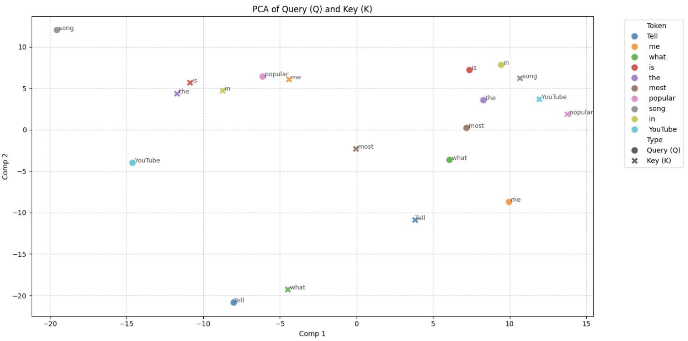
Fig. 5.5 PCA of the Query/Key Spaces. Source: Gemini.#
5.3. Attention#
5.3.1. Raw Attention and Softmax#
A central element of the transformer is the set of pairs \((Q_i,K_j)\) where all tokens ask information (Query) about all others, since we don’t know in advance what query is aligned with what key.
However, in dec-only models, it is not allowed that tokens in a given position attend (query) posterior tokens (since this is cheating in causal lenguage modeling). Therefore, we get only \((Q_i,K_j)\) pairs where \(j\le i\) (this is the causal mask).
Given these the pairs \((Q_i,K_j)_{j\le i}\) we perform the following computations:
or matricially
where \(d_k\) is the dimension (size) of the Key space (\(768\) in this model). The above matrix contains the raw attention weights. They are ‘raw’ because there are not still a probability distribution wrt each row.
Consider now a row \(\mathbf{R}_{i:}\) of \(\mathbf{R}\). If we set \(\mathbf{R}(i,j)=+\infty\) for \(j>i\) and compute
since \(e^{-\infty}=0\), we naturally give a zero attention weight to ‘future’ tokens.
Matricially, we have
The attention pattern for a given pair \((\mathbf{W}_Q,\mathbf{W}_K)\) i.e. what produces the matrices \((\mathbf{Q},\mathbf{K})\) is shown in Fig. 5.6. Note the lower-triangular structure due to causality. As expected, both \(\textbf{me}\) and \(\textbf{what}\) attend preferently to \(\textbf{Tell}\).
{kind=link}
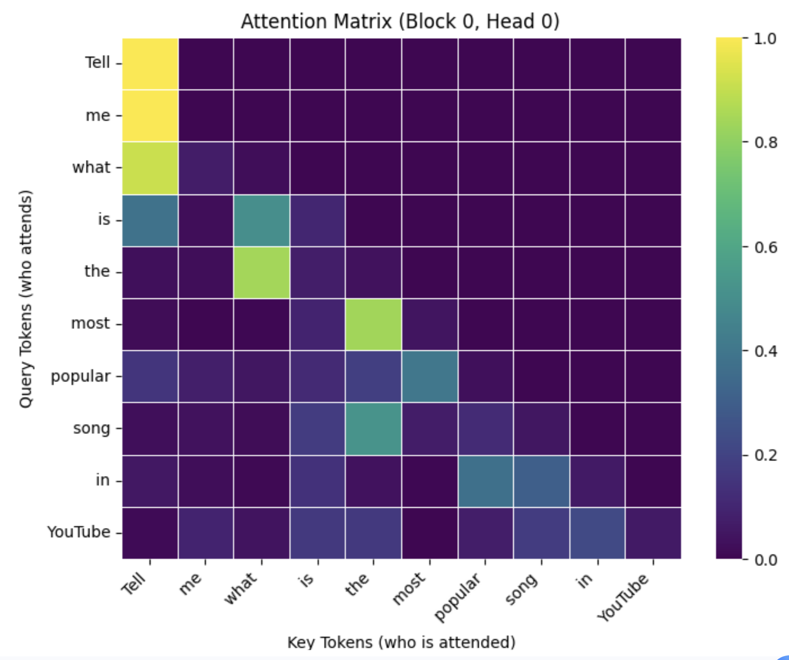
Fig. 5.6 Attention head 0 for layer 0. Source: Gemini.#
5.3.2. Value#
Once we have the probabilities that any token attends any preceeding one (including itself) in the sequence, we can proceed to update its embedding as suggested in Fig. 5.2 (bottom).
In order to update the embedding of a given token, say \(\textbf{me}\) or \(\textbf{what}\) we project the embedding of that token on a Value Matrix \(\mathbf{W}_V\) of size has size \(768\times 768\) in this model.
The role of \(V_i=\mathbf{W}_V E_i\) is to contextualize the embedding \(E_i\) wrt to the input sentence. The result, \(V_i\) is the adapted meaning of \(E_i\) wrt to the input sentence \(L\). For instance, in Fig. 5.7 we show how the initial embeddings change after contextualization: each cross represents a \(V_i\).
{kind=link}
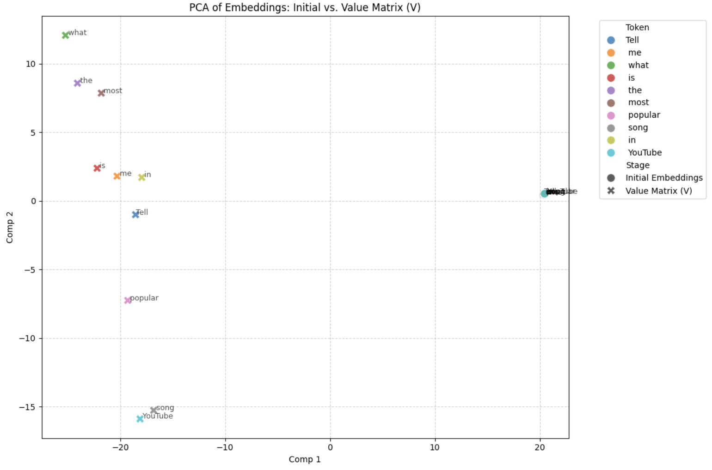
Fig. 5.7 PCA of the Value Space. Source: Gemini.#
5.3.3. Blending#
Once we have computed the attention weights and the values, are the embeddings are (matricially)modified as follows:
This process is know as blending.
Note that the rows of \(\mathbf{S}\) contain the attention coefficients for a given token \(i\) (how it attends to all the other tokens in the sequence) and each column of \(\mathbf{V}\) has the contextualized values of this token.
For a particular \(E^{\text{att}}_i\) we have:
In other words, the new embedding is given by the linear combination of the contextualized valued of all the embeddings, where the coefficients of the combination are the attention weights. Naturally, when an attention coefficient is zero this means that the corresponding \(V_j\) has no effect in the new meaning of \(E_i\).
In Fig. 5.8, we show the PCA space for the new embeddigs. Note that all of them are pretty aligned wrt a unique component and also that their relative distances are respectful with the order of the corresponding token in the sequence.
{kind=link}
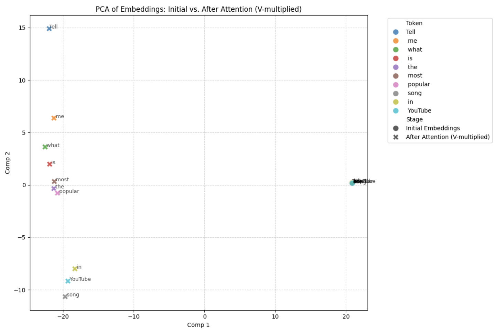
Fig. 5.8 PCA of Blending. Source: Gemini.#
5.3.4. Multiple Attention heads#
Despite we have focused our discussion in a single attention head for explaining the role of the Q-K.-V matrices \(\mathbf{W}_Q\), \(\mathbf{W}_K\) and \(\mathbf{W}_V\) for updating the embeddings of all the tokens in the input sentence, the Transformer has multiple attention heads as we show in Fig. 5.9.
{kind=link}
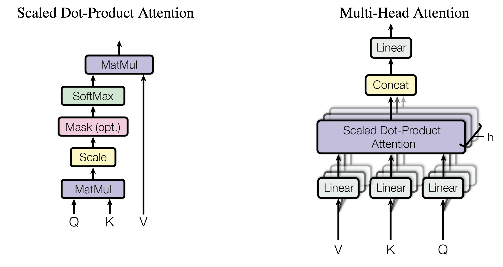
Fig. 5.9 Multi-head attention. Source: Source Attention is all You Need.#
In particular, the \(\text{BreadAi/gpt-Youtube}\) model has 12 attention heads per layer. In Fig. 5.10, we show the 12 heads for the first Transformer layer. Note that, although most of the attention patterns are congruent with verbness, no one (but the AR training process) imposes this particular feature. In addition, many heads exhibit a self-attention (diagonal) pattern.
{kind=link}
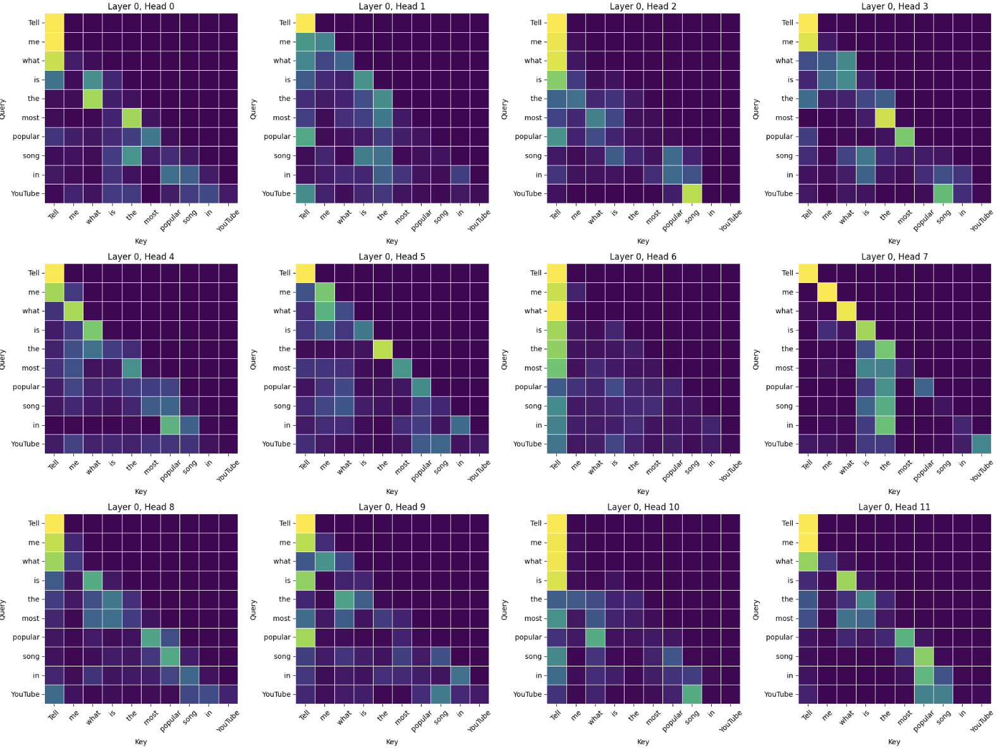
Fig. 5.10 12 attention heads of layer 0. Source: Gemini code for \(\text{BreadAi/gpt-Youtube}\).#
Parallelization. Herein it is key to note that each particular attention head uptates the input embeddings in a different way. This adds a significant flexibility to the model. This is done in parallel.
Division and later concatenation. If we held 3 different Q-K-V matrices per layer, the output of each attention layer should have dimension \(\text{num-heads}\times L\times 768\) after concatenating the outputs of all the heads. If so, the output dimension should be \(12\times 10\times 768=92,160\). Thes would be impractical for large \(L\) (large contexts). What is usually done is:
Unique Q-K-V matrices. Each layer hold unique \(768\times 768\) matrices \(\mathbf{W}_Q\), \(\mathbf{W}_K\) and \(\mathbf{W}_V\), however they are divided in \(768\times d_q\) blocks, where \(d_q = 768/\text{num_heads}=64\).
Split \(Q_i\), \(K_i\) and \(V_i\) (all of dimension \(768\)) into the \(\text{num-heads}=12\), thus having sub-vectors of dimension \(768/\text{num_heads} = 64\).
Merge. Feed each attention head with the three types of sub-vectors and then concatenate all the results, thus having a \(L\times 768\) dimensions (dimensionality consistency).
This process is illustrated in Fig. 5.11 and Fig. 5.12
{kind=link}
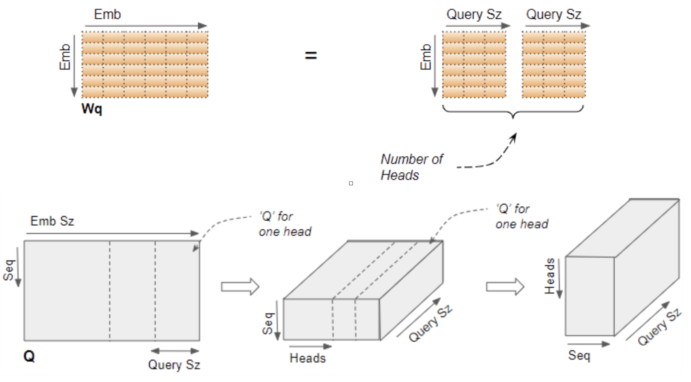
Fig. 5.11 Matrix Split. Source: Towards Data Science.#
{kind=link}
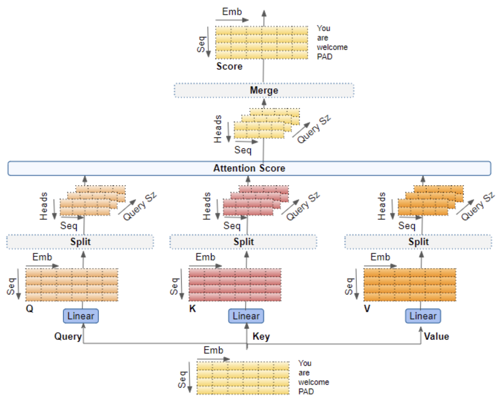
Fig. 5.12 Split and Merge in Transformers. Source: Towards Data Science.#
The split-and-merge approach allows that separate sections of the embedding can learn different aspects of the meaning of each word.
Note, in Fig. 5.13, that the PCA space after spli-and-merge (considering all heads) is different from that of blending (Fig. 5.8) which is considering a single head.
{kind=link}
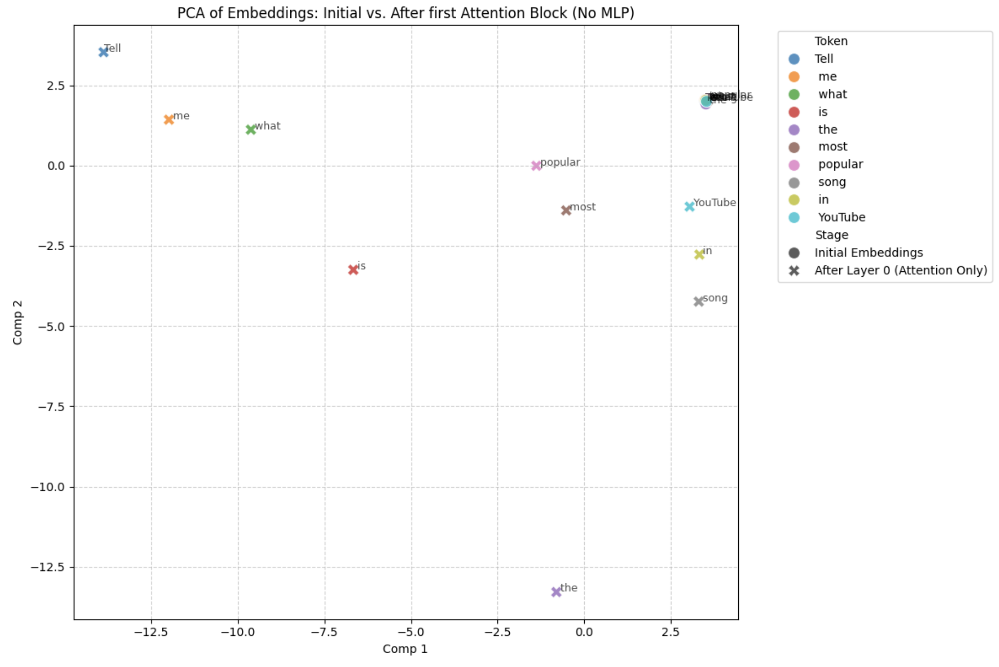
Fig. 5.13 PCA after split-and-merge for the first attention layer. Source: Gemini.#
Last layer heads. To conclude this part on attention, in Fig. 5.14 we show the attention patterns of the last multi-head attention layer:
{kind=link}
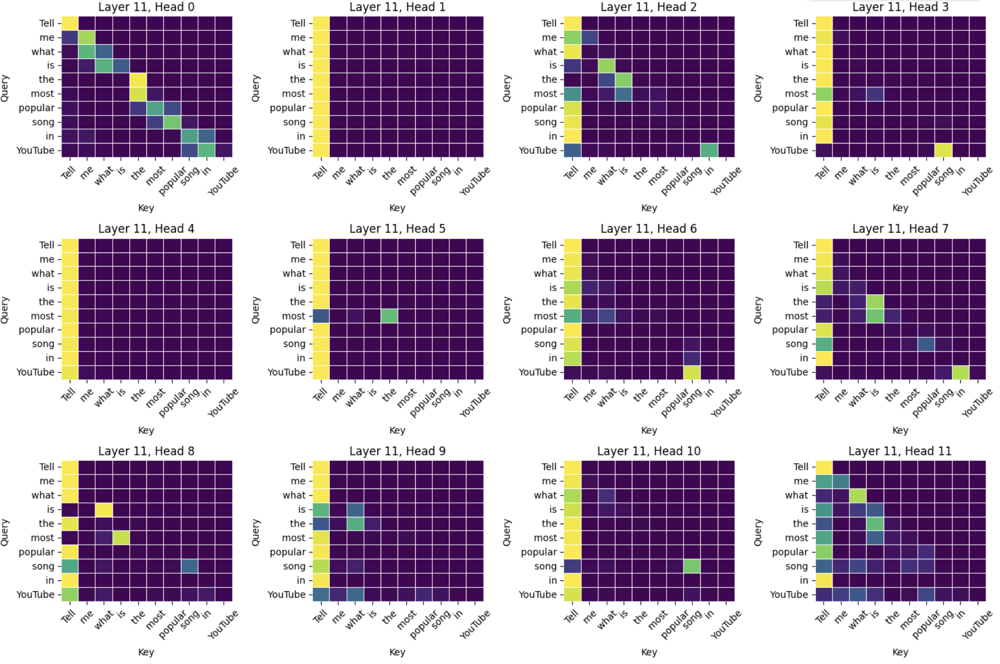
Fig. 5.14 Attention heads of layer 11 (last layer). Source: Gemini code for \(\text{BreadAi/gpt-Youtube}\).#
The summary token. Interestingly, the most common attention pattern herein is that all tokens attend the inital one \(\textbf{Tell}\). This often indicates that the first token has become a kind of ‘summary token’ or an ‘anchor’ for the entire input. As information flows through the model’s layers, the representation of the first token can accumulate global context or an overall understanding of the prompt. Subsequent tokens then attend to this enriched first token to quickly gather an aggregated view of the input, which can be highly efficient for tasks like prediction or understanding the overall theme. It acts as a stable reference point that distills the essence of the input, making it readily accessible for complex decision-making in the deeper layers.
{kind=link}
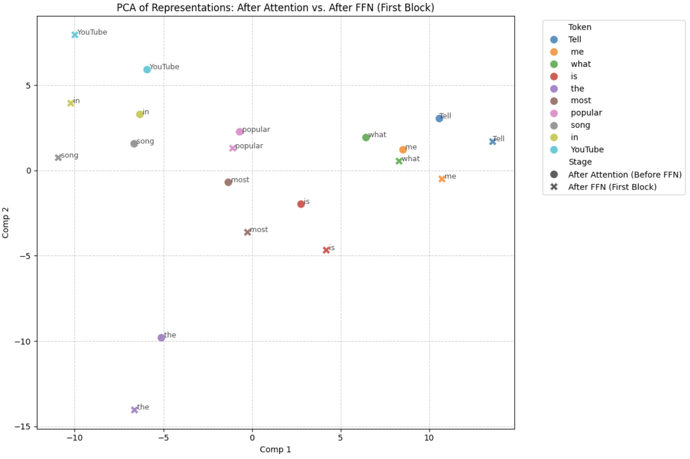
Fig. 5.15 PCA before FFN and after embedding. Source: Gemini.#
5.4. Full Architecture#
The key element of the Transformer arquitecture is the multi-head attention. However, there are some elements not yet discussed, who deserve a comment:
GPTNeoXForCausalLM(
(gpt_neox): GPTNeoXModel(
(embed_in): Embedding(50304, 768)
(emb_dropout): Dropout(p=0.0, inplace=False)
(layers): ModuleList(
(0-11): 12 x GPTNeoXLayer(
(input_layernorm): LayerNorm((768,), eps=1e-05, elementwise_affine=True)
(post_attention_layernorm): LayerNorm((768,), eps=1e-05, elementwise_affine=True)
(post_attention_dropout): Dropout(p=0.0, inplace=False)
(post_mlp_dropout): Dropout(p=0.0, inplace=False)
(attention): GPTNeoXAttention(
(query_key_value): Linear(in_features=768, out_features=2304, bias=True)
(dense): Linear(in_features=768, out_features=768, bias=True)
)
(mlp): GPTNeoXMLP(
(dense_h_to_4h): Linear(in_features=768, out_features=3072, bias=True)
(dense_4h_to_h): Linear(in_features=3072, out_features=768, bias=True)
(act): GELUActivation()
)
)
)
(final_layer_norm): LayerNorm((768,), eps=1e-05, elementwise_affine=True)
(rotary_emb): GPTNeoXRotaryEmbedding()
)
(embed_out): Linear(in_features=768, out_features=50304, bias=False)
)
{kind=link}
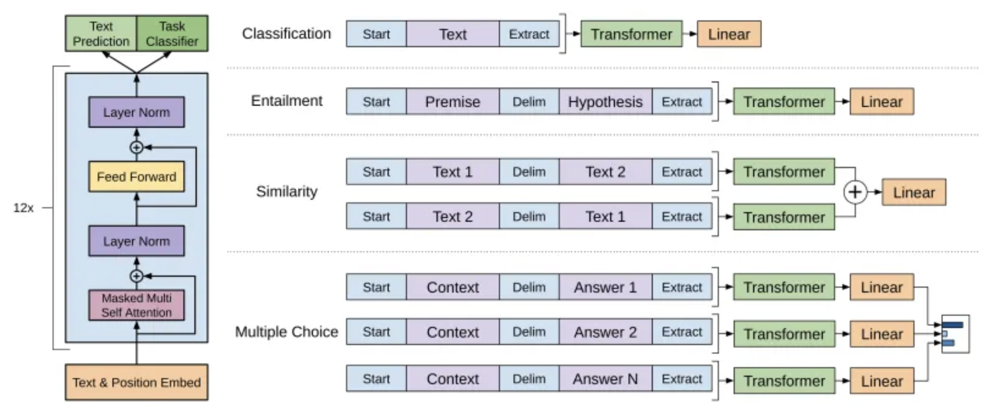
Fig. 5.16 Architecture of Transformer module. Source: Medium.#
Embedding. The Embedding layer of \(\text{BreadAi/gpt-Youtube}\) is \(\text{embed-in}\): It has dimension \(\text{vocabulary-size}\times 768\). All semantics are stored in the weights of this layer.
Transformer layers. \(\text{BreadAi/gpt-Youtube}\) has 12 Transformer layers before a final \(\text{LayerNorm}\) and an \(\text{embed_out}\), and inverse embedding for decoding.
Attention module. Each layer has \(\text{GPTNeoXAttention}\) which is basically an MLP \(\text{(query_key_value)}\) that learns the Q-K-V matrices. This 2-layer MLP first perform expansion (input: \(768\), output: \(4\times 768= 3072\)) and to provide more abstract representations and then contraction to hold dimensionality consistency (input: \(4\times 768=3072\), output: \(768\)).
5.5. Next-Token Machines#
Logits. The last layer of our Transformer (\(\text{embed_out}\)) receives as input the hiddent state (update) of each token. As we are using an AR model, the role of this last layer is to produce, in turn, the logits, i.e. the \(\ell(\mathbf{x}_t)=\mathbf{y}_{\mathbf{x}_1,\ldots,\mathbf{x}_{t-1}}(\mathbf{x}_t)\), where \(\mathbf{x}_t\) is any of the \(50,304\) different tokens that can be the next one.
Sampling/Decoding. An simple, but not confiable method for obaining the best token to predict is to sample the probabilities obtained by softmaxing the logits:
where \(T\) is the temperature (\(T=1\) by default). The larger \(T\) the more entropic is the resuling probability distribution. The default setting ensures that we do not ‘randomize the distribution beyond the Transformer logits.
In our example, where \(T=0.7\) the top5 tokens and their probabilities are:
Top 5 tokens and their probabilities:
- '...': 0.8496
- '?': 0.0542
- ' ?': 0.0220
- '.': 0.0129
- ' history': 0.0123
Therefore, a greedy search for the prediction produces \(\text{'...'}\). However, doing this prediction time after time usually leads to incoherent output sentence.
Beam search. However, beam search produces a globally consistent sequence. It works as follows:
Initialization. Generate the logits for the first token to predict and select the \(k\) tokens with largest probabilities (top-\(k\) tokens).
Iterative steps: For each of the \(k\) partial sequences:
a) Add any of the possible tokens in the vocabulary.
b) Calculate the logits of this new token conditioned to the extended sequence. This step implies running the Transformer again with the extended sequence.
c) Update the total score of the sequence /(usually the log of the cumulative probability).
d) Select, from all the candidates generated, the best top-\(k\) for create the new beam.
import torch
import math
def simplified_beam_search(model, tokenizer, prompt, num_beams=3, max_new_tokens=5):
input_ids = tokenizer(prompt, return_tensors="pt").input_ids
if tokenizer.pad_token_id is None:
tokenizer.pad_token_id = tokenizer.eos_token_id
# Step 1: Generate the first candidate `num_beams`:
with torch.no_grad():
outputs = model(input_ids)
next_token_logits = outputs.logits[0, -1, :]
next_token_probs = torch.softmax(next_token_logits, dim=-1)
top_probs, top_indices = torch.topk(next_token_probs, num_beams)
# Each "beam" is a tuple (score_log, sequence_ids, parent_sequence_id)
beams = [(math.log(prob.item()), [idx.item()], 0) for prob, idx in zip(top_probs, top_indices)]
# Store the beam scores and sequences history for visualization
beam_scores_history = {i: [] for i in range(num_beams)}
beam_sequences_history = {i: [] for i in range(num_beams)}
beam_parents_history = {i: [] for i in range(num_beams)}
nodes = [] # To store (step, beam_idx, token_id, score, parent_idx)
edges = []
# Add initial nodes for the prompt (step -1)
prompt_tokens = input_ids[0].tolist()
prompt_node_id = tuple(prompt_tokens)
nodes.append({
'id': prompt_node_id,
'label': tokenizer.decode(prompt_tokens, skip_special_tokens=True),
'score': 0.0,
'step': -1
})
current_node_id_counter = 0 # Unique ID for each generated token sequence
print(f"\n--- Step 0: Start with prompt: '{prompt}' ---")
print(f"Initial candidates (top {num_beams}):")
for i, (score, seq, parent_id) in enumerate(beams): # Fixed: Unpack 3 values
full_seq = input_ids[0].tolist() + seq
node_id = tuple(full_seq)
parent_node_id = prompt_node_id
nodes.append({
'id': node_id,
'label': tokenizer.decode(seq, skip_special_tokens=True),
'score': score,
'step': 0,
'full_text': tokenizer.decode(full_seq, skip_special_tokens=True)
})
edges.append((parent_node_id, node_id, {'token': tokenizer.decode([seq[-1]])}))
beam_scores_history[i].append(score)
beam_sequences_history[i].append(node_id)
beam_parents_history[i].append(parent_node_id)
print(f" - '{tokenizer.decode(full_seq, skip_special_tokens=True)}' (Score: {score:.4f})")
# Step 2: Iterate to extend sequences:
for step in range(max_new_tokens - 1):
all_candidates = [] # Store new candidates
for beam_idx, (score, seq_ids, parent_id) in enumerate(beams):
current_input_ids = torch.tensor([input_ids[0].tolist() + seq_ids], device=model.device)
with torch.no_grad():
outputs = model(current_input_ids)
next_token_logits = outputs.logits[0, -1, :]
next_token_probs = torch.softmax(next_token_logits, dim=-1)
# Obtener los top `num_beams` tokens para extender cada secuencia actual
next_top_probs, next_top_indices = torch.topk(next_token_probs, num_beams)
for next_prob, next_idx in zip(next_top_probs, next_top_indices):
new_score = score + math.log(next_prob.item()) # Add log-probs
new_seq_ids = seq_ids + [next_idx.item()]
all_candidates.append((new_score, new_seq_ids, tuple(seq_ids))) # Store parent sequence ID
# Bound: Select the best `num_beams` among all generated
all_candidates.sort(key=lambda x: x[0], reverse=True)
beams = all_candidates[:num_beams] # Keep only the top `num_beams`
print(f"\n--- Step {step + 1}: Extension --- ({tokenizer.decode(input_ids[0].tolist(), skip_special_tokens=True)}...)")
for i, (score, seq, parent_seq) in enumerate(beams): # Fixed: Unpack 3 values
full_seq = input_ids[0].tolist() + seq
node_id = tuple(full_seq)
parent_node_id = tuple(input_ids[0].tolist() + list(parent_seq))
nodes.append({
'id': node_id,
'label': tokenizer.decode([seq[-1]]),
'score': score,
'step': step + 1,
'full_text': tokenizer.decode(full_seq, skip_special_tokens=True)
})
edges.append((parent_node_id, node_id, {'token': tokenizer.decode([seq[-1]])}))
beam_scores_history[i].append(score)
beam_sequences_history[i].append(node_id)
beam_parents_history[i].append(parent_node_id)
print(f" - '{tokenizer.decode(full_seq, skip_special_tokens=True)}' (Score: {score:.4f})")
# Final result
print("\n--- Final generation (Best Beam) ---")
best_score, best_seq_ids, _ = beams[0]
final_generated_text = tokenizer.decode(input_ids[0].tolist() + best_seq_ids, skip_special_tokens=True)
print(f"'{final_generated_text}' (Score: {best_score:.4f})")
return beam_scores_history, nodes, edges
Example. We run the above algorithm as follows:
beam_scores_history, beam_nodes, beam_edges = simplified_beam_search(model, tokenizer, my_prompt, num_beams=3, max_new_tokens=4)
and the result is:
--- Step 0: Start with prompt: 'Tell me what is the most popular song in YouTube' ---
Initial candidates (top 3):
- 'Tell me what is the most popular song in YouTube...' (Score: -0.1630)
- 'Tell me what is the most popular song in YouTube?' (Score: -2.9147)
- 'Tell me what is the most popular song in YouTube ?' (Score: -3.8189)
--- Step 1: Extension --- (Tell me what is the most popular song in YouTube...)
- 'Tell me what is the most popular song in YouTube...?' (Score: -1.2316)
- 'Tell me what is the most popular song in YouTube...
' (Score: -1.3814)
- 'Tell me what is the most popular song in YouTube...I' (Score: -3.0739)
--- Step 2: Extension --- (Tell me what is the most popular song in YouTube...)
- 'Tell me what is the most popular song in YouTube...
' (Score: -1.3846)
- 'Tell me what is the most popular song in YouTube...?,(' (Score: -1.4672)
- 'Tell me what is the most popular song in YouTube...?
' (Score: -3.1475)
--- Step 3: Extension --- (Tell me what is the most popular song in YouTube...)
- 'Tell me what is the most popular song in YouTube...?,(reply' (Score: -1.4842)
- 'Tell me what is the most popular song in YouTube...
This' (Score: -2.6576)
- 'Tell me what is the most popular song in YouTube...
"' (Score: -3.0459)
--- Final generation (Best Beam) ---
'Tell me what is the most popular song in YouTube...?,(reply' (Score: -1.4842)
The complete result is:
--- Original Prompt ---
Tell me what is the most popular song in YouTube
--- Generated Text ---
Tell me what is the most popular song in YouTube...?,(reply>), Hit me up 👆📩
by setting: \(\text{num_beams}=5\) and \(\text{max_new_tokens}=50\) and calling to
# Generate text using the model.
# `inputs["input_ids"]` contains the tokenized prompt.
# `max_new_tokens` limits the length of the generated continuation.
# `num_beams` > 1 enables beam search, which explores multiple possible next words to find a more coherent sequence.
# `no_repeat_ngram_size` prevents repetitive phrases.
# `early_stopping=True` stops generation once all beam hypotheses have reached an end-of-sequence token.
# `temperature` controls the randomness of generation (lower values make output more deterministic).
outputs = model.generate(
inputs["input_ids"],
attention_mask=inputs["attention_mask"], # Pass the attention mask
pad_token_id=tokenizer.pad_token_id, # Pass the pad_token_id
max_new_tokens=50,
num_beams=5,
no_repeat_ngram_size=2,
early_stopping=True,
temperature=0.7 # Adjust for less random (lower) or more creative (higher) output
)
# Decode the generated text: Convert the numerical output tokens back into human-readable text.
# `skip_special_tokens=True` removes tokens like `[CLS]`, `[SEP]`, etc.
generated_text = tokenizer.decode(outputs[0], skip_special_tokens=True)
6. Beyond Transformers#
The success of the Transformer as an architecture for LLMs suggests a series of changes in the basic architecture. These changes are mainly motivated by scaling. In Fig. 6.1, we sketch how these changes are driven by more sophisticated LLMs: LLama vs Qwen where the context length scales from 131k tokens to 256k tokens.
{kind=link}
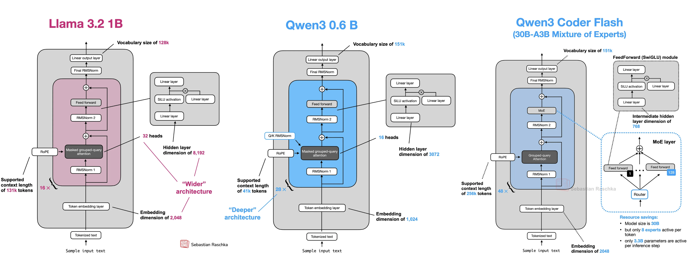
Fig. 6.1 Architectural chages after Transformers. Source: Sebastian Raschka’s Build a Large Language Model (from Scratch).#
6.1. MoE#
6.1.1. The intuition#
Mixtures of Experts (MoE). In Fig. 6.1 (right), Qwen3 uses a Mixture-of-Experts (MoE) architecture, to activates only a subset of its 235B parameters per query resulting in high efficiency without sacrificing quality. This is the basic idea of MoEs: replace dense MLP/FFN (dense) layers by smaller specialized NNs.
The scaling hypothesis. the motivation behind MoE is partly driven by the scaling hypothesis, which suggests that emergent abilities tend to arise as LLMs are scaled up on massive datasets. This explains the trend of increasingly larger models, such as the GPT series growing from 117M to 175B parameters.
However, not everyone has the resources to train LLMs at such scale, and MoE offers a practical compromise: it enables scaling up model size to boost capacity while keeping training and inference costs manageable by activating only a small portion of the total parameters for each input token.
In inference time, each token is processed by several NNs (see Fig. 6.2):
A “Router” (The Manager): This is a small network. Its job is to look at the input data (like a word or part of a word) and decide which expert(s) are the best fit to handle it right now.
A Team of “Experts”: These are smaller, specialized neural networks (usually simple Feed-Forward Networks or MLPs but not necessarily smaller than their dense counterparts in classical Transformers). Each expert might get good at handling certain types of information or patterns.
{kind=link}
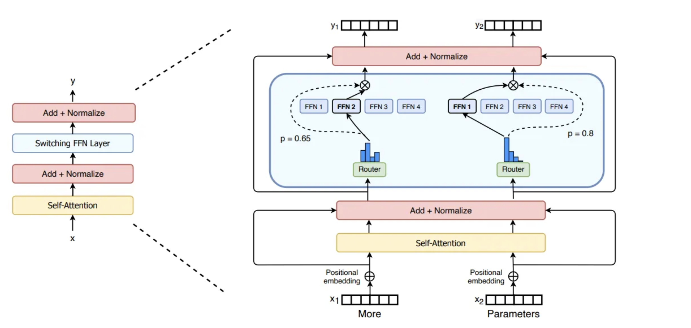
6.1.2. MoE’s output#
The token’s journey changes significantly here. Given a token \(\mathbf{x}\) (from now on, we use ‘token’ and ‘embedding’ indistinctively), the output of the MoE-block (wrt the classical Transformer MLP/FFN-block) is as follows:
where \(E_k(.)\) is the \(k-\)th expert (of a total of \(n\) experts) and \(g_k\) is a weight. This means that the output of each expert is weighted. However, this weight \(g_k\) is not the probability of choosing expert \(E_k\), just how each partial result is weighted. Again, an embedding \(\text{MoE}(\mathbf{x})\) is a linear combination of embeddings.
Note that the weights \(g_k(\mathbf{x})\) is non-zero only for the selected experts. In Fig. 6.3, only experts 2 and 4 are selected, whereas the other experts are ignored. After that, their outputs are respectively weighted by \(0.7\) and \(0.3\) to produce the output of the MoE-block.
{kind=link}
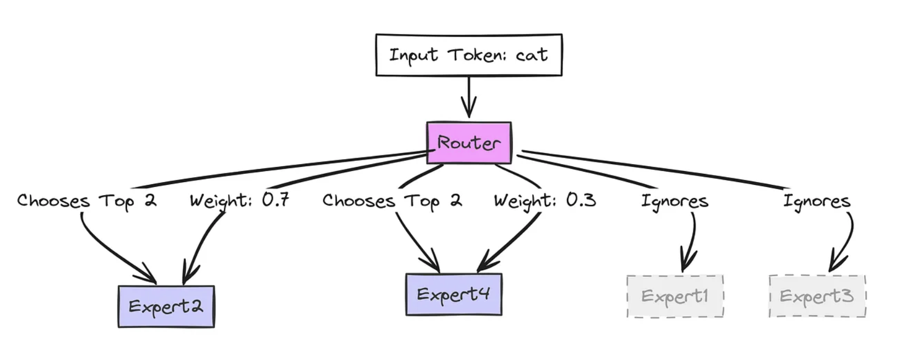
Fig. 6.3 Choosing experts and weights. Source: Medium and Fareed Khan.#
6.1.3. Gating Network#
Noisy Top-k Gating. Given \(\mathbf{x}\) a small network (usually a single linear layer + Softmax) maps it to a score vector \(g(\mathbf{x})\in\mathbb{R}^n\). Softmax gating leads to a dense distribution whereas sparse gating (such as that in Fig. 6.3) zeroes out most entries (Top-k Gating).
Top-k Gating means that only \(k\) experts are going to be selected to process token \(\mathbf{x}\). Typically, the number of experts selected per token is \(k=1,2\). This means that each input token activates at most \(k=2\) experts. If so, how do we ensure that no expert is idle?. This is done via injecting Gaussian noise to the \(g_k(.)\) before the gate makes the top-k selection. Let \(G(\mathbf{x})=[g_1(\mathbf{x}),g_2(\mathbf{x}),\ldots,g_n(\mathbf{x})]\) the output vector of the router. Then:
and
is just another vector where the noiseless gate’s output is perturbed by \(N(0,1)*\sigma\). Since \(\text{Softplus}(x)=\log(1 +\exp(x))\), is non-negative, it parameterizes the noise variance.
Finally, we have
Purpose of Noising. This noise adds randoness to the expert selection. Then, although an expert is not (initally) among the top scored, this noise may increase its score enough to be eventually top. This has two benefits:
This forces the model to explore among the experts (experts are not idle, i.e. they become active).
In addition, the workload of the experts is balanced (kind of a uniform distribution) during the training time.
The best experts do have the chance to contribute which improves their especialization.
6.1.4. DeepSeek MoE#
DeepSeek introduces two improvements wrt basic MoE:
Fine-Grained Expert Segmentation. Instead of having a small set of large experts, DeepSeek-MoE has a large number of small experts. This increases the possible number of expert combinations, thus allowing the capture of more nuanced patterns. This improves finer-grained knwoledge and improved accuracy.
Shared Expert Isolation. In adition to token-routed experts, DeepSeek-MoE has a set of shared experts. This avoids redundant learning for individual routed experts. These routed experts can focus on specialization.
The combination of these elements makes DeepSeek more scalable, efficient and knowledge-rich wrt conventional MoEs.
In Fig. 6.4 we show
64 Routed Experts. Each token is dynamically assigned to a subset of 6 routed experts based on the router function.
2 Shared Experts. The shared experts specialize in capturing general knowledge that is useful across tokens, ensuring that common information does not need to be redundantly learned by the routed experts.
How to the shared experts work?. As we can see in Fig. 6.5(right), shared experts are not subject to the router: they run in parallel with it, as if they where residual connections.
{kind=link}
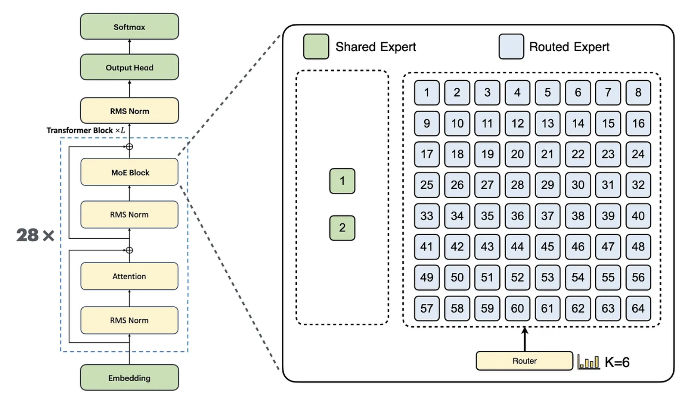
Fig. 6.4 DeepSeek-MoE: \(k\) experts light as a Xmas Tree. Source: Medium.#
{kind=link}
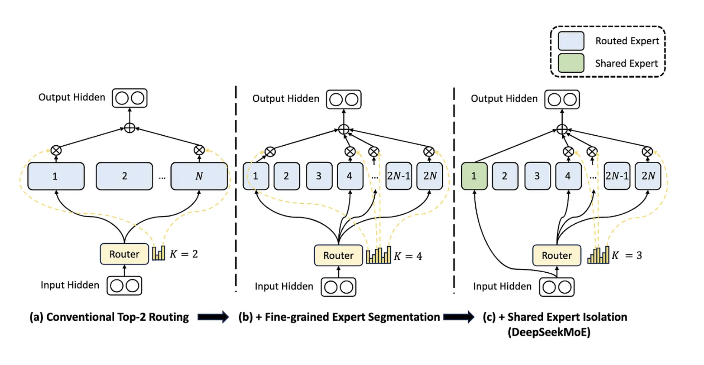
Fig. 6.5 DeepSeek-MoE: progression from basic MoEs. Source: Medium.#
Benefits of the Shared Expert/s. There are many interesting benefits of this strategy:
Ensure a Basic Processing Route. This complements the noisy gating to fight the well-known ‘Dead Experts Problem’: in a pure MoE, if the router/gate does not enroutes the tokens to certain experts or if an expert never receives enough training data it becomes a dead expert. This makes the training unstable. However as we ensure that at least the common experts are triggered, this ensures that all tokens receive a basic and coherent processing.
Better resistance to Sparse Activations. Specially in the first training epochs, the router may be not effective to select the proper experts. Without a shared experts this may lead to a random routing or to a irrelevant routing (this produces noisy gradients). Shared experts anchor the training, thus giving the router enough margin to specialize the other experts more agressively as an alternative route for each token.
Facilitates common information transfer. Certain features of the language such as the sintactic processing are more universal/general than specific. Then, the shared expert can manage these features and the other experts can focus on more detailed/specialized features.
Implicit regularization. The shared expert can be seen as a regularization method. It forces that part of the learning is shared and limits the risk that the individual experts overfit or that the moded leans on a particular expert.
6.2. Transformer vs MoE#
Along the first part of this topic,we studied a real Transformer-based LLM: \(\text{BreadAi/gpt-Youtube}\). Herein, we compare it with a MoE-based LLM: \(\text{Qwen1.5-MoE-A2.7B}\). This MoE holds most of the features discussed for MoEs in this section.
6.2.1. Qwen Architecture#
The global architectore of \(\text{Qwen1.5-MoE-A2.7B}\) is as follows:
Qwen2MoeForCausalLM(
(model): Qwen2MoeModel(
(embed_tokens): Embedding(151936, 2048)
(layers): ModuleList(
(0-23): 24 x Qwen2MoeDecoderLayer(
(self_attn): Qwen2MoeAttention(
(q_proj): Linear4bit(in_features=2048, out_features=2048, bias=True)
(k_proj): Linear4bit(in_features=2048, out_features=2048, bias=True)
(v_proj): Linear4bit(in_features=2048, out_features=2048, bias=True)
(o_proj): Linear4bit(in_features=2048, out_features=2048, bias=False)
)
(mlp): Qwen2MoeSparseMoeBlock(
(gate): Qwen2MoeTopKRouter()
(experts): Qwen2MoeExperts(
(act_fn): SiLUActivation()
)
(shared_expert): Qwen2MoeMLP(
(gate_proj): Linear4bit(in_features=2048, out_features=5632, bias=False)
(up_proj): Linear4bit(in_features=2048, out_features=5632, bias=False)
(down_proj): Linear4bit(in_features=5632, out_features=2048, bias=False)
(act_fn): SiLUActivation()
)
(shared_expert_gate): Linear4bit(in_features=2048, out_features=1, bias=False)
)
(input_layernorm): Qwen2MoeRMSNorm((2048,), eps=1e-06)
(post_attention_layernorm): Qwen2MoeRMSNorm((2048,), eps=1e-06)
)
)
(norm): Qwen2MoeRMSNorm((2048,), eps=1e-06)
(rotary_emb): Qwen2MoeRotaryEmbedding()
)
(lm_head): Linear(in_features=2048, out_features=151936, bias=False)
)
Some basic aspects:
Larger vocabulary: 151k vs 50k (\(\approx 3\times\)). Also the embedding dimension is doubled: \(2048\) vs \(768\).
More Layers. The number of embedding layers, named \(\text{Qwen2MoeDecoderLayer}\) are now \(24\) instead of \(12\).
6.2.1.1. Self-attention#
Note that whereas GPT holds a unique compact Q-K-V matrix (layer \(\text{query_key_value}\) with dimension \(768\times 3\times 768\)) Qwen holds 3 separated matrices (linear layers): \(\text{q_proj}\), \(\text{k_proj}\) and \(\text{v_proj}\) each one square wrt the embedding dimension \(2048\):
(self_attn): Qwen2MoeAttention(
(q_proj): Linear4bit(in_features=2048, out_features=2048, bias=True)
(k_proj): Linear4bit(in_features=2048, out_features=2048, bias=True)
(v_proj): Linear4bit(in_features=2048, out_features=2048, bias=True)
(o_proj): Linear4bit(in_features=2048, out_features=2048, bias=False)
This has the following interpretability properties:
Independent transformations. Q, K and V are specialized in their primitive roles: Query, Key and add Value. This is radically different from split and merge, where Q-K-V matrices are coupled (it is a design decision imposed by efficiency that can be leveraged herein).
Granular analysis. We can inspect Q, K and V separaterly and identify their differences and be sure that they are really playing their roles.
Clear Diagnosis. If the attention module has some issues, we may analyze Q, K and V independently (maybe the Queries are not doing their job or the Keys are nor answering correctly). In other words, the analysis of the Q/K space is easier.
As GPT, Qwen also has many attention heads. In this case, Qwen has \(16\) heads vs the \(12\) of GPT. Independently of this number of heads, remind that the attention matrices depend on the Q-K-V layers which in turn are impacted by MoE (in the case of Qwen) or regular FFNs/MLPs (in the case of GPT). Naturally, also the training data and the number of tokens lead to attentional differences as we see in Fig. 6.6. Note that the last layer of GPT (left) has on average more self-attention in its last layer (12/12) than the mid-term layer (12/24) of Qwen. Also Q/K pairs wrt to the first token are more diverse in GPT than in Qwen.
{kind=link}
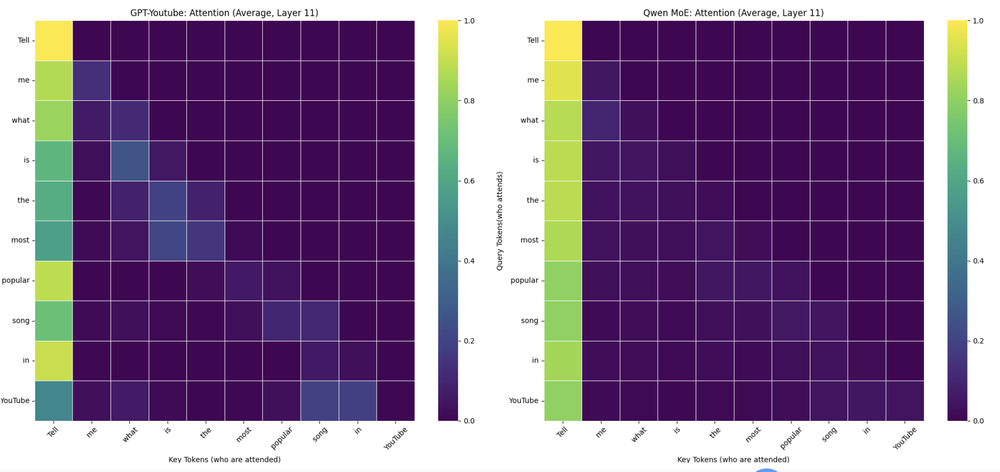
Fig. 6.6 GPT-vs-Qwen Attentional Differences. Source: Gemini.#
This is clearer in Fig. 6.7 where we represent \(\text{Qwen-GPT}\) average scores for the same layer. In particular the last token \(\textbf{Youtube}\) attends more the first one \(\textbf{Tell}\) in Qwen than in GPT, thus showing a larger contextual power.
{kind=link}
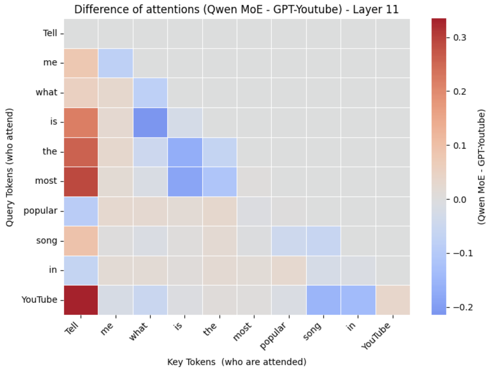
Fig. 6.7 GPT-vs-Qwen Attentional Differences (2). Source: Gemini.#
Both do Split-and-Merge. In addition to the Q-K-V matrices of GPT, Qwen has an additional one, the matrix O (the layer \(\text{o_proj}\)). The purpose of this matrix/layer is to concatenate the outputs of each head and project back to the original model dimensionality (as the layer). This layer is the same that the \(\text{dense}\) layer after the layer \(\text{query_key_value}\) in GPT. The layers before \(\text{o_proj}\) in Qwen and \(\text{query_key_value}\) in GPT only prepare the attention computation. Then split-and-merge works and the output layers \(\text{dense}\) and \(\text{o_proj}\) consolidate the result.
6.2.1.2. MoE#
Obviously, the MoE block is exclusive of Qwen. Note the gate, the experts and the shared expert:
(mlp): Qwen2MoeSparseMoeBlock(
(gate): Qwen2MoeTopKRouter()
(experts): Qwen2MoeExperts(
(act_fn): SiLUActivation()
)
(shared_expert): Qwen2MoeMLP(
(gate_proj): Linear4bit(in_features=2048, out_features=5632, bias=False)
(up_proj): Linear4bit(in_features=2048, out_features=5632, bias=False)
(down_proj): Linear4bit(in_features=5632, out_features=2048, bias=False)
(act_fn): SiLUActivation()
)
(shared_expert_gate): Linear4bit(in_features=2048, out_features=1, bias=False)
)
{kind=link}
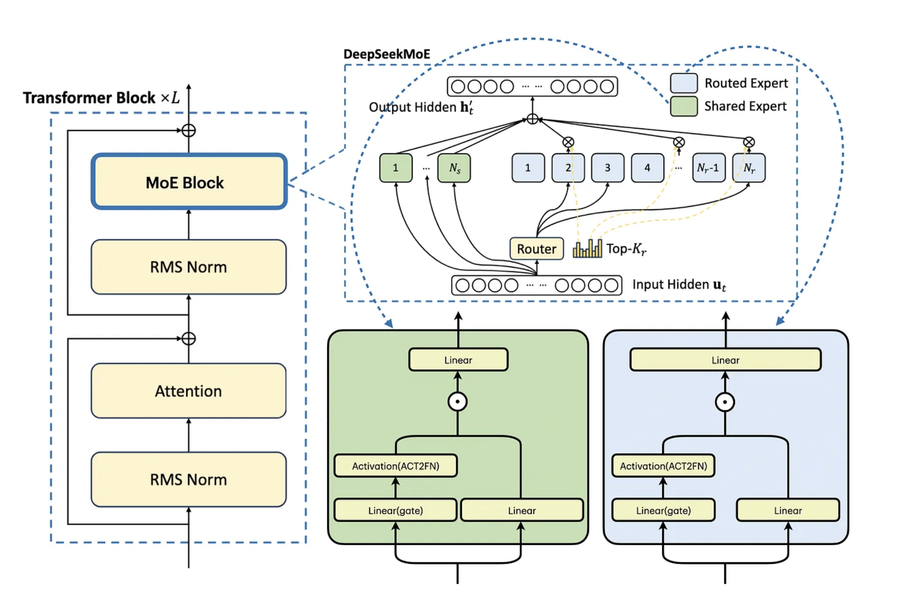
Fig. 6.8 MoE with the architecture of Experts. Source: Medium#
Basically, experts and shared expert have a similar architecture as show in Fig. 6.8.
gate_proj (Linear4bit): Input projection and initial activation. Takes the token representation and projects it onto a larger dimension (note that
bias= False). The name gate is a bit confusing here because it is not a router. It is just a first projection. Such a projection enters a non-linearity (this is the origin of the name gate here).up_proj (Linear4bit): Dimensional expansion. Similar to gate_proj, but now the token representation can be projected to an even larger dimension. Such a projection does not enter a non-linarity.
down_proj (Linear4bit): given the result of \(\text{activation}(\text{gate}\ast\text{up})\) (element-wise multiplication), this layer comes back to the model dimension. This role is essentially the one performed by
(mlp): GPTNeoXMLP(
(dense_h_to_4h): Linear(in_features=768, out_features=3072, bias=True)
(dense_4h_to_h): Linear(in_features=3072, out_features=768, bias=True)
(act): GELUActivation()
)
in GTP.
Shared expert gate. The last element of the MoE block is:
(shared_expert_gate): Linear4bit(in_features=2048, out_features=1, bias=False)
Note that this layer has in_features=2048, out_features=1. The role of this gate is to control the contribution of the shared expert to the final output of the MoE block. It gives a scalar weigth to combine with those of the outputs of the other experts. The basic equation is
Therefore, when \(g_{shared}\) is large, the MoE prefer to be more generalistic and vice versa when \(g_{shared}\) is small.
Concering the number of parameters we have:
GPT-Youtube (Single FFN Block):
dense_h_to_4h layer parameters: 2,362,368
dense_4h_to_h layer parameters: 2,360,064
Total parameters in one FFN block: 4,722,432
Qwen MoE (Single Expert - shared_expert block):
gate_proj layer parameters: 11,534,336
up_proj layer parameters: 11,534,336
down_proj layer parameters: 11,534,336
Total parameters in one expert: 34,603,008
6.2.1.3. Sparseness and Specialization#
The particularity of MoE models is that the token’s journey is by definition more sparse and complex than in the case of primitive Transformers. As attention patterns are interesting, also router activation of experts wrt each token in the sequence reveals the specialization of the experts. In Qwen we have \(60\) experts and \(k=2\) for TopK.
Initially (Layer 1 in Fig. 6.9), there is a small specialization. Interestingly, the there is a larger probability that one of the experts takes the first token \(\textbf{Tell}\).
Later on, mid term activatios (Layer 12 in Fig. 6.9) reveal a significant specialization, since the same expert (16) processes almost all the sequence but the start and end. This indicates a specialization in a particular sintantic role: the content of the question (\(\textbf{what is the best...in}\)). Both the tokens \(\textbf{Tell}\) and \(\text{Youtube}\) do have a more scattered process. Since \(k=2\) this pattern is very consistent (MoEs select the same Expert again and again for the in-between tokens).
Finally, the last layer (Layer 23 in Fig. 6.9) exhibits also some degree of specialization.
{kind=link}
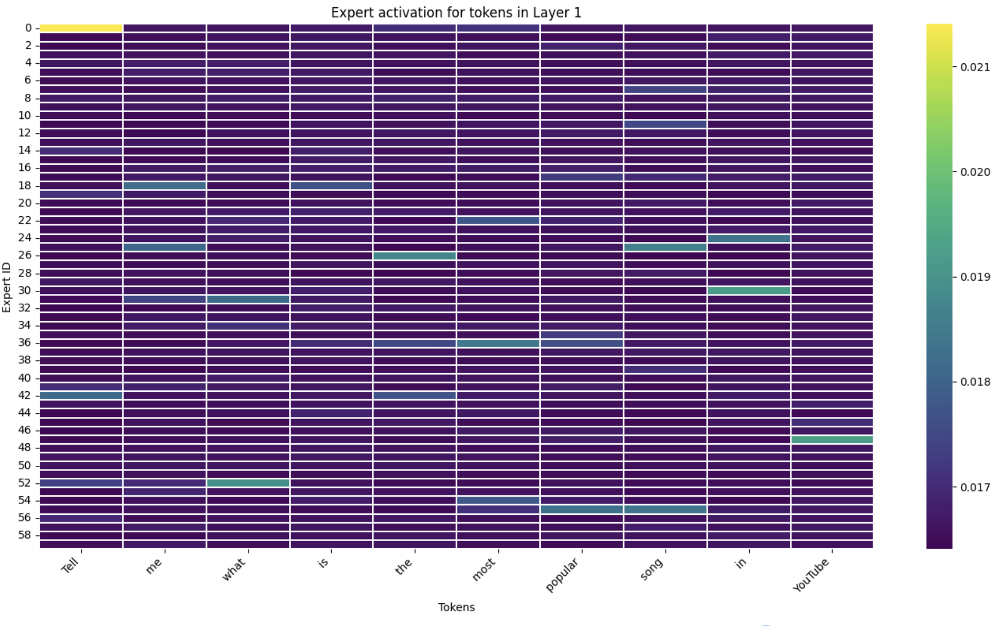
Fig. 6.9 Router activation of experts for Layer 1. Source: Gemini.#
{kind=link}
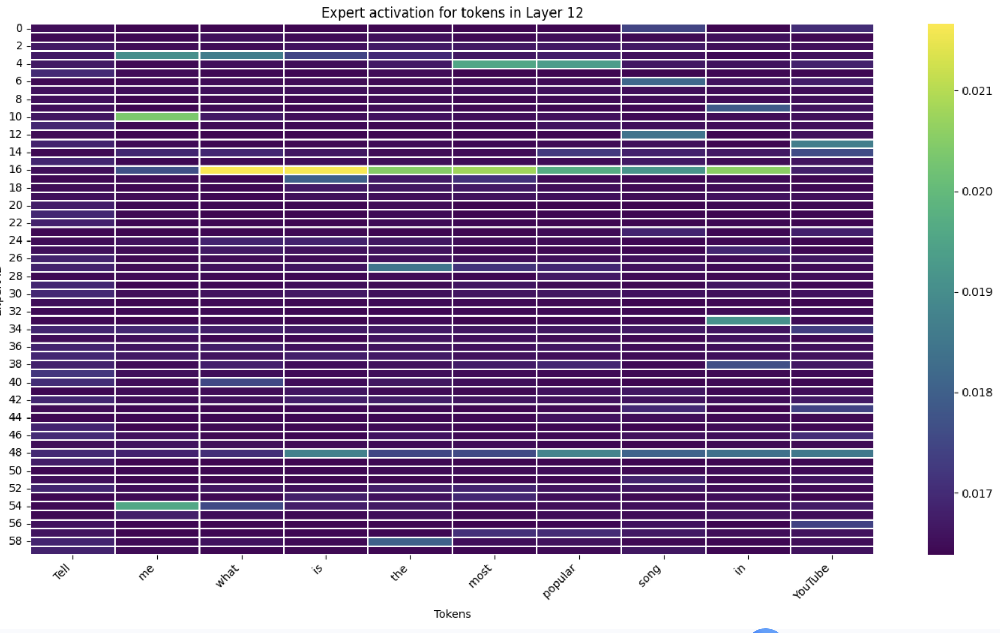
Fig. 6.10 Router activation of experts for Layer 12. Source: Gemini.#
{kind=link}
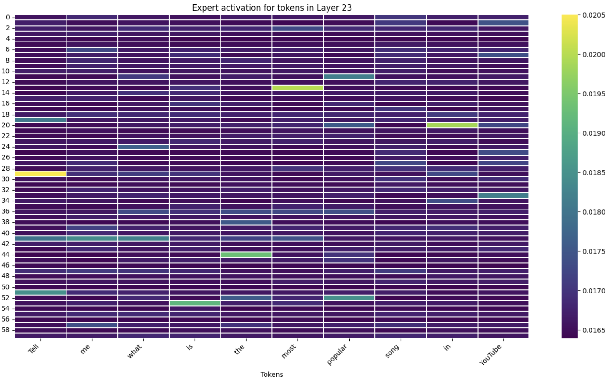
Fig. 6.11 Router activation of experts for Layer 23 (last layer). Source: Gemini.#
Narrow Vision. . However, the above results can be misleading (note the low values of the probabilities). The gate’s routing mechanism also gives rise to narrow vision: Experts may not be exposed to enough diverse data to develop a comprehensive understanding of their respective sub-tasks, potentially impairing the model’s generalization performance:
Selective Expert Activation: The router’s primary job is to select only a small number (top-k, typically 2) of experts for each token. In a way, this is a “narrow vision” because it doesn’t engage all 60 experts simultaneously for every piece of information. It specifically focuses on what it deems the most relevant experts, ignoring the others. This is by design, for efficiency and specialization, but it is a selective focus.
Local Decision-Making: The router makes its decision about which experts to activate based on the current hidden state of a single token at a particular layer. Its “vision” is local to that token and layer, rather than having a global overview of the entire input sequence’s meaning or the model’s overall processing goal across all layers. However, the cumulative effect of these local decisions across many layers is what builds global understanding.
Potential for Bias/Sub-optimality: If the router is not perfectly trained, its “vision” might be considered “narrow” if it consistently favors certain experts or overlooks others that could provide better insights for a given token. This would mean its selection process is not optimally broad or diverse when it should be.
Interestingly, relatively recent studies (such as MoDE) show that solving this issue entails exchanging knowledge between experts.,
6.2.1.4. Jensen Divergence#
Since the token’s journey is by far more complex in MoEs that in regular Transformers, we need analytic tools to assess aspects such as the narrow vision. In this regard, Information Theory plays a key role, since we can compare the routing distributions of several layers wrt the tokens in the sequence.
The Jensen-Shannon Divergence (JSD) \(\text{JSD}(\mathbf{p},\mathbf{q})\) is basically the symmetrized KL divergence between two distributions:
where \(\mathbf{p}\) and \(\mathbf{q}\) encode (herein) the router distributions of two different layers wrt a given token.
We have the following implications:
Dynamic Expert Routing: The varying JSD scores across tokens highlight the dynamic nature of the MoE architecture. The ‘gate’ mechanism intelligently routes tokens to different sets of experts, and this routing strategy evolves as the model builds a richer contextual understanding through its layers.
Progressive Specialization: Tokens that show higher JSD values (like ‘Tell’) might require a more progressive specialization from different experts to capture their evolving contextual meaning. Conversely, tokens with lower JSD might have their core meaning consistently handled by certain experts.
In Fig. 6.12 we see how the first and a short-term layers mostly differ:
\(\textbf{Tell}\) shows the highest divergence (JSD: 0.0352): This suggests that the model’s processing strategy for the token \(\textbf{Tell}\) changes most significantly between the initial (Layer 0) and intermediate (Layer 6) stages. In Layer 0, the model might be focusing on basic syntactic roles or general word meaning. By Layer 6, \(\textbf{Tell}\) is likely integrated into a more complex semantic context (e.g., as part of a question or instruction), requiring different experts to contribute to its representation.
\(\text{song}\) and \(\text{YouTube}\) (and others) show moderate divergence (JSD: 0.0151 and 0.0135 respectively): These tokens also exhibit shifts in expert activation, but to a lesser extent than \(\textbf{Tell}\). For \(\text{song}\), the initial processing might establish its basic musical identity, while later layers refine its contextual meaning (e.g., popular song, song in YouTube). Similarly for \(\text{YouTube}\), early layers might recognize it as a proper noun, and later layers activate experts related to its function as a video platform.
\(\text{popular}\) shows the lowest divergence (JSD: 0.0087): The relatively low JSD for this token indicates that the model’s expert activation strategy for this adjective is more consistent between Layer 0 and Layer 6. This could mean that the core semantic properties of ‘popular’ are processed by a similar set of experts throughout these early and intermediate layers, or that its contextual meaning doesn’t undergo as drastic a transformation as other tokens.
{kind=link}
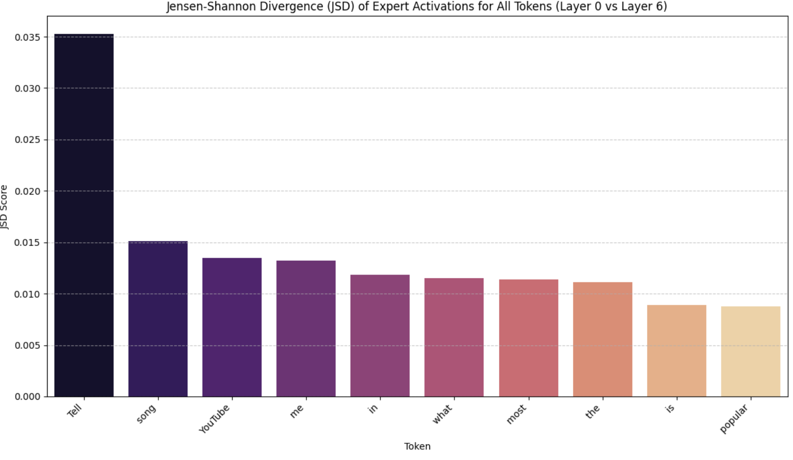
Fig. 6.12 Jensen scores between layers 0 and 6. Source: Gemini.#
7. Paremeter-Efficient Fine Tuning (PEFT)#
Standard Fine Tuning (SFT). SFT consists of modifying all the weigths of the LLM model (e.g Transformer or MoE) to adapt the LLM architecture two new datasets or tasks. However this is not practical due to hard computational and storage constraints.
General rationale. Whatever the complexity of the LLM, remember that it is a NN, i.e. a parametric model (function doing I/O mapping). Therefore, the aim of PEFT is to adapt your pre-trained LLM so that the number of additional parameters for doing so is drastically minimized.
7.1. Beyond Standard FT#
Adapters. The standard procedure for PEFT for a given dataset/task is to (i) replace some layers by other, known as adapter layers in to base pre-trained model, (ii) freeze the weights of your pre-trained model and (iii) update the weights of those adapter layers only (see Fig. 7.1).
{kind=link}
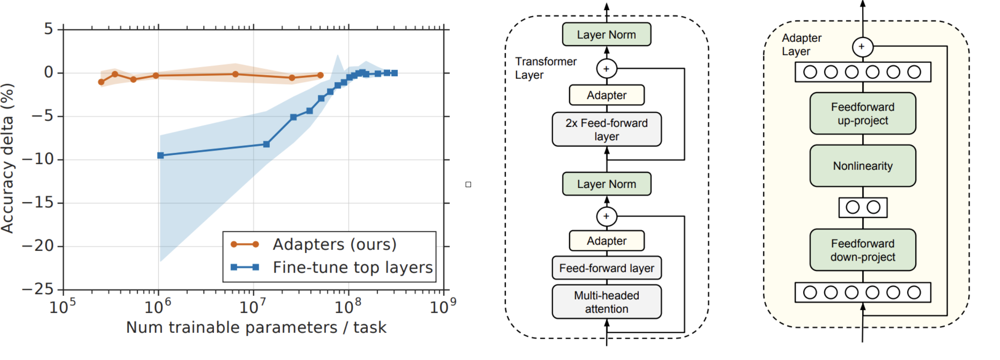
When we adapt only the last layers (a very popular approach) of the Transformers (and freeze the remaining ones), this happens:
Fixed Feature Extractors. The earlier layers of a pre-trained model act as general feature extractors. If these early layers are frozen, the model’s ability to extract features relevant to a new, potentially very different, task or dataset is constrained. While they might capture universal features (like edges or textures in images, or grammatical structures in text), they might not be optimal for the specific nuances of the new problem.
Limited Capacity for New Learning. Deep learning models learn hierarchical representations. Early layers capture low-level features, and subsequent layers build upon these to form more abstract, high-level features. If only the last layers are adapted, the model can only recombine the existing high-level features in new ways, but it cannot fundamentally learn new types of intermediate features. This limits its capacity to adapt to entirely new patterns or relationships present in the target data.
Suboptimal Feature Alignment. In distillation, the goal is for a smaller student model to mimic the complex behavior of a larger teacher. If the student only adapts its last layers, it might struggle to align its internal feature representations with the teacher’s, especially if the teacher’s early and intermediate layers have learned highly specialized or subtle features that the student’s fixed early layers cannot replicate or approximate.
Domain Shift Challenges. When the target domain is significantly different from the domain the original model was pre-trained on, the early layers might extract features that are not entirely relevant or are even misleading for the new task. Adapting only the last layers in such a scenario would mean building upon a potentially poor foundation.
7.2. Prefix tuning#
Adapters are only one of the available methods for PEFT. These methods are described in the Review Paper. We summarize their role in Fig. 7.1:
{kind=link}
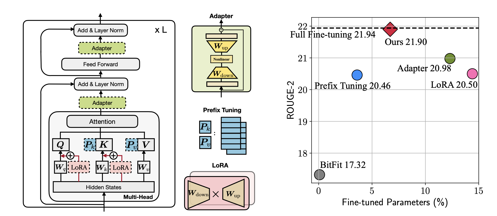
Among them, we highlight herein the one termed prefix tuning (PT). This method is quite intuitive and low parameter consuming. PT basically consists of learning the more informative input embeddings to contextualize a given input. This icludes:
Prefix definition. Put the prefix in the input (left context) and define a trainable matrix \(\mathbf{P}\) whose dimension is \(\text{length_of_prefix}\times d\). This defines a virtual token.
Training. Frozen the weights of the LLM and learn \(\mathbf{P}\). To that end, the embedding of the virtual token is just the output of this matrix. Otherwise, the embedding of a regular token is also influenced by the matrix \(\mathbf{P}\) since the other weights are frozen.
Interestingly the prefix is not necesarily new word of the vocabulary. It may actually mean a specific task. This simply particularizes the obtained embeddings and the working of the LLM (see Fig. 7.3):
{kind=link}
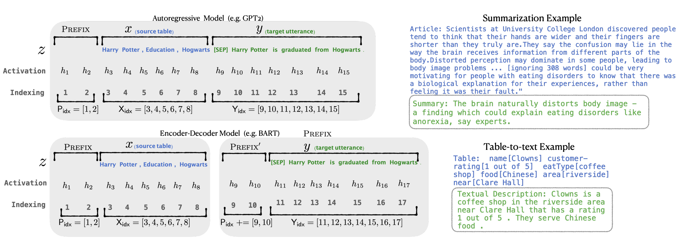
Note that in Fig. 7.1, the output of \(\mathbf{P}\) is also concatenated to that the K-V matrices in order to adapt/contextualize keys and values. As the Q-K space is essential for attention, the K-V matrices cannot be far from Q (anchoring effect).
7.3. LoRA#
7.3.1. LoRA’s Hypothesis#
Low-Rank Adaptation (LoRA) stands for complementing the original weight matrices, for instance the Q-K-V ones, by low-rank versions. During fine-tuning, the Q-K-V matrices are kept frozen whereas the complementing low-rank matrices are learnt.
Two basic ideas:
Low intrinsic dimensions. The authors of the LoRA paper draw inspiration from other researchers (e.g. Aghajanyan et al. (2020)) showing that the pre-trained language models have a low instrisic dimension. In other words, there exists an unknown low dimension \(d\) whose reparameterization is as effective for fine-tuning as the full parameter space.
More general than adapters. While adapter-based methods converge to an MLP, LoRA converges to the weights of the original model. Indeed, LoRA is more general because it allows the training of a subset of the pre-trained parameters such as the Q-K-V matrices in Transformers and MoEs.
7.3.2. LoRA’s method#
Let \(\mathbf{W}_{d\times d}\) the original matrix (for instance a Q-K-V one). The basic idea of LoRA is to learn the matrix \(\Delta \mathbf{W}:=\mathbf{B}\mathbf{A}\) of rank \(r\ll d\) so that the new model layer is:
Then, as we show in the yet classic Fig. 7.4, during fine-tuning an input embedding \(\mathbf{x}\) becomes:
where \(\alpha\) controls the trade-off between preserving pre-trained knowledge and incorporating task-specific adaptations.
Note that \(\mathbf{W}\) is frozen and \(\mathbf{B}\mathbf{A}\) is initialized to zero since \(\mathbf{B}\) and \(\mathbf{A}\) is initialized to normalized Gaussian weights \(N(0,\sigma^2)\). Then, as fine-tuning progresses
{kind=link}
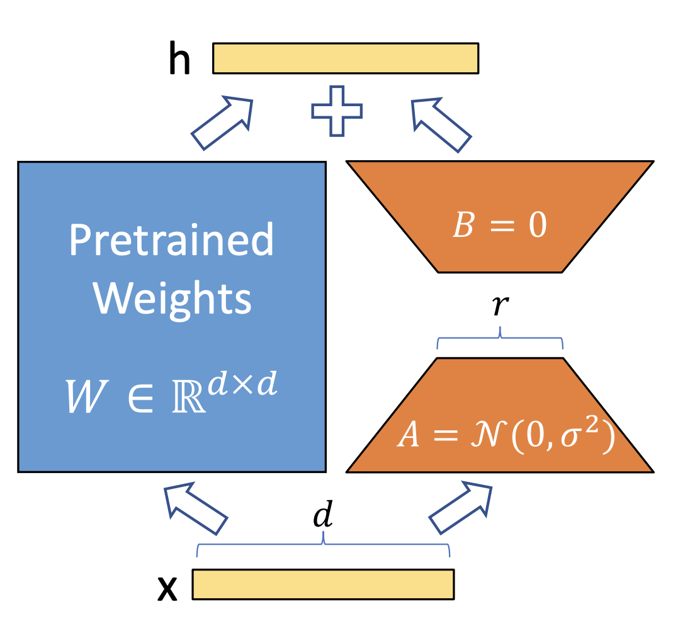
7.3.3. Benefits and practice#
Benefits of using LoRA. LoRA has been adopted in LLMs since:
Memory and storage usage. For a large Transformer/MoE trained with Adam, LoRA reduces that VRAM usage by up to 2/3 if \(r\ll d\) as we do not need to store the optimizer states for the frozen parameters. On GPT-3 175B, LoRA reduces the VRAM consumption during training from 1.2TB to 350GB. With \(r = 4\) and only the query and value projection matrices being adapted, the checkpoint size is reduced by roughly \(10,000\times\) (from 350GB to 35MB).
Multi-tasking. Note that given a model, matrices \(\mathbf{A}\) and \(\mathbf{B}\) are unique for a given task (a type of fine-tuning). Different tasks for the same model require different matrices \(\mathbf{A}'\) and \(\mathbf{B}'\). In this way you can take a traditional Transformer as base and build a MoE by adapting it via differenet As and Bs matrix pairs.
Practical recommendations. See also the summary of the LoRA paper:
Better to have low rank (\(r=2\)) and adapt many types of matrices (e.g \(\mathbf{W}_Q\) and \(\mathbf{W}_K\)) than have larger ranks (\(r=4,8\)) and adapt a single type of matrix (e.g. only \(\mathbf{W}_Q\) or only \(\mathbf{W}_K\)).
Original \(\mathbf{W}\) and adapted matrices \(\Delta\mathbf{W}\) are related. Both matrices do have a strong correlation. However, rather than repeating the top singular directions of \(\mathbf{W}\), \(\Delta\mathbf{W}\) only amplifies directions that are not emphasized in \(\mathbf{W}\). In other words, LoRA amplifies the important features for specific downstream tasks that were learned but not emphasized in the general pre-training model.
7.3.4. A first adaptation#
Let us compare the impact of LoRA in an LLM such as \(\text{mistralai/Mistral-7B-Instruct-v0.2}\) before and after LoRA fine-tuning.
Before. In order to preparate the model for fine-tuning, we use the following code:
from peft import LoraConfig, get_peft_model
# LoRA configuration
lora_config = LoraConfig(
r=16, # LoRA attention dimension
lora_alpha=32, # Alpha parameter for LoRA scaling
target_modules=["q_proj", "k_proj", "v_proj", "o_proj", "gate_proj", "up_proj", "down_proj", "lm_head"], # Target specific modules to apply LoRA
lora_dropout=0.05, # Dropout probability for LoRA layers
bias="none", # Bias type, can be 'none', 'all' or 'lora_only'
task_type="CAUSAL_LM", # Task type for the model
)
# Apply LoRA to the base model
model = get_peft_model(model, lora_config)
# Print the number of trainable parameters
model.print_trainable_parameters()
print("LoRA adapter applied successfully.")
Considerations:
LoRA \(\alpha\):
lora_alpha=32, sets the parameter \(\alpha\) where \(\alpha/r\) scales \(\Delta\mathbf{W}\mathbf{x}\). When optimizing with Adam, tuning \(\alpha\) is roughly the same as tuning the learning rate if we scale the initialization appropriately. As a result, we simply set \(\alpha\) to the first \(r\) we try and do not tune it. This scaling helps to reduce the need to retune hyperparameters when we vary \(r\).Task types. In the example, we set
task_type="CAUSAL_LM"but there many others:CAUSAL_LM: This is what we are using in this notebook. It stands for Causal Language Modeling. This task type is used for models that predict the next token in a sequence, which is typical for generative language models like GPT, Llama, and Mistral. The model learns to generate text autoregressively. [for this task, the target matrix \(\mathbf{W}\) choice are attention heads]SEQ_CLS: Sequence Classification. Used for tasks where the model classifies an entire sequence, such as sentiment analysis (positive/negative), spam detection, or topic classification [for this task, the target matrix should be the classifier].TOKEN_CLS: Token Classification. Used for tasks where each token in a sequence needs to be classified, such as Named Entity Recognition (NER) or Part-of-Speech (POS) tagging. [for this task, the target matrix should be the token-classifier].SEQ_2_SEQ_LM: Sequence-to-Sequence Language Modeling. Used for models that generate an output sequence based on an input sequence, common in translation, summarization, or question answering where the answer is a generated sequence. [for this task, the target matrix should be the encoders and the decodes].FEATURE_EXTRACTION: Used when the goal is to extract features from the model, rather than perform a specific downstream task. This is less common for direct fine-tuning and more for using the model as an encoder.
Responses without training. For the following prompt:
"Write a short, engaging advertisement for a new smart home device that cleans your house using AI."
The generated text of the original model vs the one with LoRA just initialized (random noise) is:
--- Generated Text (Original Model): ---
Introducing the newest member of your family: The AI Housekeeper! 🤝 Say goodbye to tedious chores and hello to a cleaner, smarter home. 🏠
Meet your personal home cleaning assistant, designed with advanced AI technology to learn your household habits and preferences. No more scheduling or manual settings, the AI Housekeeper adapts to your lifestyle. 🌟
This innovative device uses high
--- Generated Text (PEFT/LoRA Model): ---
Introducing the game-changing home device that's about to revolutionize your daily routine: The AI Home Cleaner! 🤖 Say goodbye to tedious chores and hello to more free time for the things you love.
This advanced, AI-powered machine is engineered to transform your living space into a pristine oasis. With its sophisticated sensors and intelligent navigation, the AI Home Cleaner maps out your home and meticulously cle
Responses after training. The generated texts of the original model wrt to the one after fine-tuning with LoRA (used the \(\text{HuggingFaceH4/ultrachat_200k}\) dataset) is:
--- Generated Text (Original Model): ---
🌟 Introducing the revolutionary new smart home device: The AI Housekeeper! 🏠🤖
Tired of coming home to a messy house after a long day? Say goodbye to the chore of cleaning with the game-changing AI Housekeeper! 🧹✨
This state-of-the-art gadget uses advanced Artificial Intelligence to learn your cleaning habits and optimize its routine for your lifestyle
--- Generated Text (PEFT Model): ---
🌟 Introducing the Game-Changing Home Companion: The AI Housekeeper 🏠🤖
Say goodbye to back-breaking chores and endless hours spent scrubbing, mopping, and vacuuming! Welcome to a new era of effortless living with our state-of-the-art AI Housekeeper. This brilliant new smart home device uses advanced Artificial Intelligence to learn your cleaning habits and preferences, adap
Qualitative comparison. After training, the LLM’s response is more complete than before training. Seems obvious that the choice of a chat for training contributes to a better text generation!
7.3.5. Perplexity#
In a second LoRA adaptation, we fine-tune the well known \(\text{BreadAi/gpt-Youtube}\) (a classical Transformer). Beyond comparing qualitatively the generate texts we introduce a quantitative measure: perplexity.
Firstly, the LoRA code is:
from peft import LoraConfig, get_peft_model
lora_config = LoraConfig(
r=8, # LoRA attention dimension
lora_alpha=16, # Alpha parameter for LoRA scaling
target_modules=["query_key_value", "dense"], # Target attention layers (updated for GPTNeoX model)
lora_dropout=0.05, # Dropout probability for LoRA layers
bias="none", # Bias type for LoRA layers
task_type="CAUSAL_LM" # Task type
)
lora_model = get_peft_model(model, lora_config)
Where the percentage of trainable parameters for LoRA are:
trainable params: 442,368 || all params: 162,765,312 || trainable%: 0.2718
Note that the selected matrices are the Q-K-V matrices and the auxiliary dense layer in each layer:
PeftModelForCausalLM(
(base_model): LoraModel(
(model): GPTNeoXForCausalLM(
(gpt_neox): GPTNeoXModel(
(embed_in): Embedding(50304, 768)
(emb_dropout): Dropout(p=0.0, inplace=False)
(layers): ModuleList(
(0-11): 12 x GPTNeoXLayer(
(input_layernorm): LayerNorm((768,), eps=1e-05, elementwise_affine=True)
(post_attention_layernorm): LayerNorm((768,), eps=1e-05, elementwise_affine=True)
(post_attention_dropout): Dropout(p=0.0, inplace=False)
(post_mlp_dropout): Dropout(p=0.0, inplace=False)
(attention): GPTNeoXAttention(
(query_key_value): lora.Linear4bit(
(base_layer): Linear4bit(in_features=768, out_features=2304, bias=True)
(lora_dropout): ModuleDict(
(default): Dropout(p=0.05, inplace=False)
)
(lora_A): ModuleDict(
(default): Linear(in_features=768, out_features=8, bias=False)
)
(lora_B): ModuleDict(
(default): Linear(in_features=8, out_features=2304, bias=False)
)
(lora_embedding_A): ParameterDict()
(lora_embedding_B): ParameterDict()
(lora_magnitude_vector): ModuleDict()
)
(dense): lora.Linear4bit(
(base_layer): Linear4bit(in_features=768, out_features=768, bias=True)
(lora_dropout): ModuleDict(
(default): Dropout(p=0.05, inplace=False)
)
(lora_A): ModuleDict(
(default): Linear(in_features=768, out_features=8, bias=False)
)
(lora_B): ModuleDict(
(default): Linear(in_features=8, out_features=768, bias=False)
)
(lora_embedding_A): ParameterDict()
(lora_embedding_B): ParameterDict()
(lora_magnitude_vector): ModuleDict()
)
)
(mlp): GPTNeoXMLP(
(dense_h_to_4h): Linear4bit(in_features=768, out_features=3072, bias=True)
(dense_4h_to_h): Linear4bit(in_features=3072, out_features=768, bias=True)
(act): GELUActivation()
)
)
)
(final_layer_norm): LayerNorm((768,), eps=1e-05, elementwise_affine=True)
(rotary_emb): GPTNeoXRotaryEmbedding()
)
(embed_out): Linear(in_features=768, out_features=50304, bias=False)
)
)
)
Note the LoRA matrices (and their dimensionality):
(lora_A): ModuleDict(
(default): Linear(in_features=768, out_features=8, bias=False)
)
(lora_B): ModuleDict(
(default): Linear(in_features=8, out_features=2304, bias=False)
)
Note the different dimensionality of the second one (due to dimensionality consistency after attention):
(lora_A): ModuleDict(
(default): Linear(in_features=768, out_features=8, bias=False)
)
(lora_B): ModuleDict(
(default): Linear(in_features=8, out_features=2304, bias=False)
)
Fine-tuning. Note that the original dataset BreadAi/gpt-Youtube is a text-generator trained on 180K YouTube comments. However, we are going to fine-tune it with Abirate/english_quotes which is rather different. This fine-tuner maps quotes to authors and tags. For instance:
“Be yourself; everyone else is already taken.”
Oscar Wilde
[
"be-yourself",
"gilbert-perreira",
"honesty",
"inspirational",
"misattributed-oscar-wilde",
"quote-investigator"
]
Training code. Given the LoRA model with the defined matrices to fine-tune, the trainer is usually configurated as follows:
# Define training arguments
training_args = TrainingArguments(
output_dir="./lora_finetuned_model", # Directory to save checkpoints
per_device_train_batch_size=4, # Batch size per device during training
gradient_accumulation_steps=4, # Number of updates steps to accumulate before performing a backward/update pass
learning_rate=2e-4, # Learning rate
num_train_epochs=3, # Total number of training epochs
logging_dir="./logs", # Directory for storing logs
logging_steps=10, # Log every N update steps
save_steps=100, # Save checkpoint every N update steps
save_total_limit=2, # Only store the last 2 checkpoints
fp16=True, # Enable mixed precision training (if GPU is available)
push_to_hub=False, # Do not push model to Hugging Face Hub
)
# Initialize Trainer
trainer = Trainer(
model=lora_model,
args=training_args,
train_dataset=tokenized_dataset,
data_collator=data_collator,
)
# Start training
trainer.train()
print("Fine-tuning complete!")
What do we expect from this fine-tuning?. Let us test the following prompt:
"What is the meaning of life?"
In qualitative terms we observe:
Setting `pad_token_id` to `eos_token_id`:0 for open-end generation.
--- Original Base Model Output ---
Setting `pad_token_id` to `eos_token_id`:0 for open-end generation.
What is the meaning of life? <br>Are there ever other sentient species in the universe at the moment of the release of us?<br>Are there really life out there?<br>Do we live in a simulation?<br>But how can we
--- Fine-tuned LoRA Model Output ---
What is the meaning of life? That consciousness thing, but to me seems the meaning l of life.
Note that the fine-tuned response is more concise due to the quoting nature of the trainer. By far, this is less generative than the original model. In other words, part of the generalistic flavor of the original model is lost in favor of specialization. This is due to the amplification effect of \(\Delta\mathbf{W}\) matrices!
Quantitative analysis. A typical way of evaluating how confident is an LLM in its predictions is to compute perplexity.
Perplexity is roughly defined as the uncertainty in predicting the next word. For instance if perplexity is \(k\), this means that the model’s predictions are on average as uncertain as choosing from \(k\) possibilities. See a more detailed description in this Medium’s article.
More formally, given a \(\theta-\)parameterized probabilistic AR model and a sequence of words \(\mathbf{x}_1,\mathbf{x}_2,\ldots,\mathbf{x}_N\), we have
However, for base \(e\), perplexity can be approximated by the exponential of the average loss:
Then, comparing the Perplexities of both the original and the fine-tuned models we obtain:
Original Model Average Loss on evaluation dataset: 4.7968
Original Model Perplexity on evaluation dataset: 121.1279
vs
Average Loss on evaluation dataset: 6.8863
Perplexity on evaluation dataset: 978.7332
The original model has an average loss of 4.7968 and a perplexity of 121.1279 on the evaluation dataset.
It’s interesting to compare this with the fine-tuned LoRA model’s perplexity, which was 978.7332. This indicates that, for the small and general dataset used, the fine-tuning process significantly increased the perplexity, suggesting it might have overfit or was not well-suited for the base model’s pre-trained knowledge on this specific task. Typically, fine-tuning aims to reduce perplexity on the target distribution. This result highlights the importance of choosing a relevant and sufficiently large dataset for effective fine-tuning.
Note. Despite the parameter efficiency of LoRA, the above results where obtained after roughly ten hours of A100 GPU!